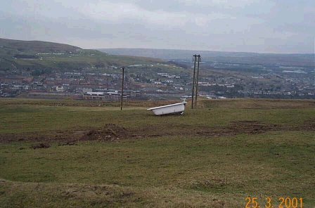
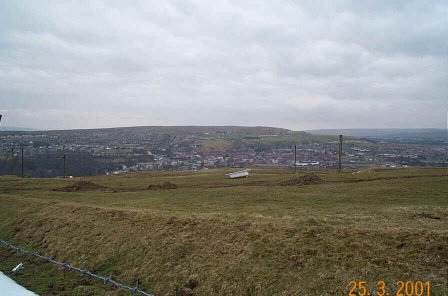
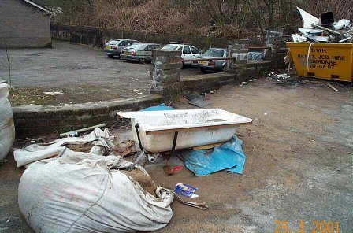
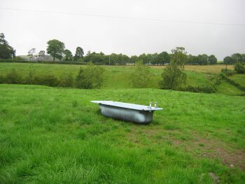
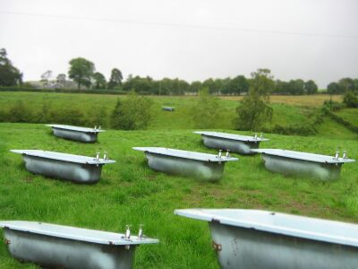
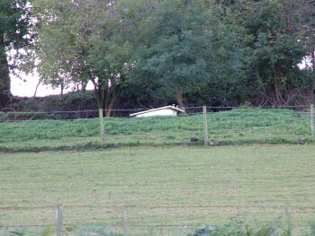

Last Update 15th October 2004 :-)
Welcome to "Bath-In-A-Field.Co.uk" (it was called Bath-In-A-Field.com, but it was toooo expensive for a skint bloke like me to keep...). This web site was created to give the world the opportunity to share in my pleasure of "Tub-Spotting". We all know the feeling. It's a wet autumn day, and your forced into the back seat of your fathers green Hillman hunter, and driven around the countryside. Your fed-up! Then . . . something catches your eye in the field to the left of you. "CHRIST" you shout at the top of your voice as your father slams on the breaks. You race out of the car and stop just a few yards away from it. You know that this is one of those times that will change your world forever.
IT'S A "BATH-IN-A-FIELD"
|  | Here you can see the puppy that started the "ball" rolling. What a gem. The front legs might have gone, but she's a beauty ! |
|  | Here you can see here from a distance. MMmmmmm. deep, deep joy :-) |
 |
This example is from the Manchester area. Thanks for Dr. Taps for the picture. |
|  | This is not good. Here you can see "one of the boys" that's been taken out of it's naturally surroundings, and left to suffer at the side of the road. Needless to say that I tracked down the culprits that were responsible for this, and thrashed them to an inch of their lives ! |
So join me as we hold hands and go forth into the county side and look at some of the wonders of this unique hobby!
If you have any pictures of "bath's in a field, please send them to webmaster@tredegar.co.uk
Site Update
CHRIST, We've only gone and made it on the radio! That nice bloke "Steve Wright" give the site a plug (cheap bath humour....) on Radio 2 on the 26th July 2001. Your favourite bath spotting page was also on the Radio 2 website here.
And since then, the world has gone mad, with over 1000 visitors looking at the porcelain tubs in just a few days. And so my fellow tub spotters I give you the following pictures sent in by other "tub Spotters" :-) Please send in your local tub pictures to here.
Latest Sightings
| David Bevan from Tredegar, near London, found a real classic
"tub". David said :-
Hi,
What a great site and a tremendously funny idea!
I must have seen this phenomenon of a bath in a
field many times but only since an Aussie told me of your site did I
start to pay attention.
Attached is an example I came across near Bala,
Wales.
The other attachment is just a possibility.
All the best,
David Bevan. (Tredegar).
|


|
|  | Steve West sent this little puppy in for us all to enjoy.
Look at her, the little minx. Steve said :-
Hi We spotted the bath, see attached photos, in Ashburton, Devon, on 18 September this year. The bath lies almost at the top of the hill in the middle of the picture. Steve West |
| Here is Jawn MacDonald who found this fine looking "tub..."
located in field
near Culbo, Black Isle, Scotland |
|
For older "Tubs....." (and boy, we've got tons of um...) Click here
(C) www.bath-in-a-field.com & www.bath-in-a-field.co.uk P.Topping

{kind=link}